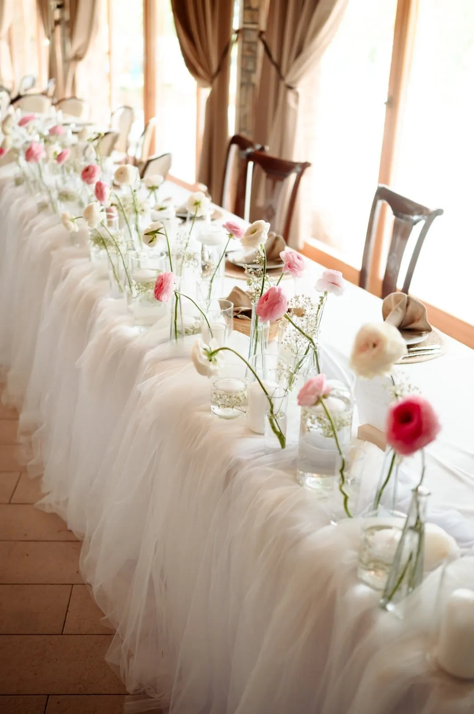
Venčanja
Vaš dan ne mora da stane u četiri zida
Ako tražite salu za svadbu u Novom Sadu, ali želite više od klasičnog restoranskog ambijenta, Happy Hill vam daje prostor da napravite potpuno drugačiji koncept venčanja.
Ceremonija može biti deo prirode. Gosti mogu da se okupe na otvorenom. Fotografisanje ne zahteva odlazak na drugu lokaciju. A nakon ceremonije, slavlje se nastavlja na istom imanju.
Na raspolaganju su vam različiti ambijenti Happy Hilla, uključujući zelenilo imanja, voćnjak, natkrivenu terasu, prostor pored bazena i svečanu salu.
Kapacitet prostora je do 200 gostiju.
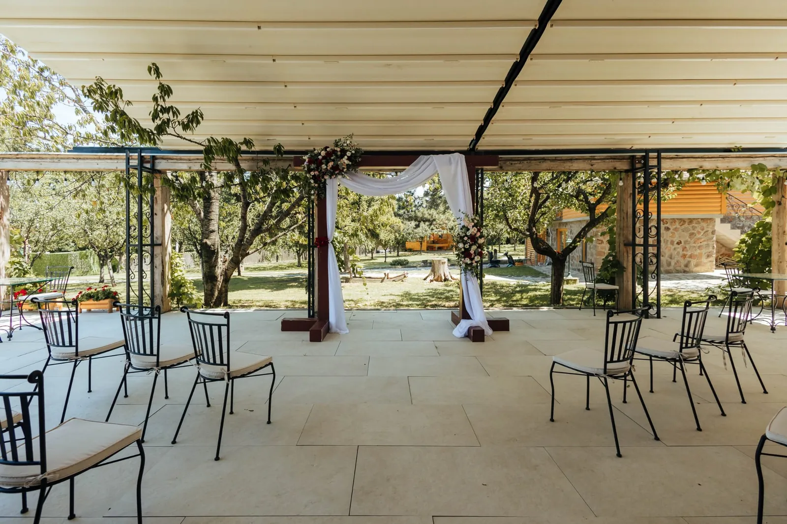
Na raspolaganju imate i
- 140 parking mesta
- Mladenački apartman
- Pomoć pri organizaciji venčanja
- Mogućnost izbora menija
- Korišćenje bazena
- Prostor za ceremoniju na otvorenom
- Doručak za mladence narednog jutra
- Kumovski ručak narednog dana
Najvažnije je da ne morate da uklapate svoje venčanje u već zadat scenario.
Prvo nam kažete kakav dan zamišljate. Onda zajedno gledamo kako Happy Hill može da ga podrži.
Tri ambijenta za jedan od najvažnijih trenutaka dana
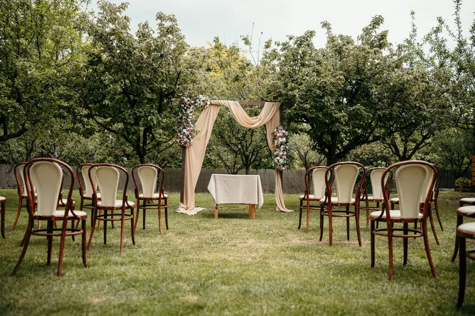
Ceremonija u zelenilu
Za mladence koji zamišljaju zavete okružene prirodom, zelenilom i svojim najbližima.
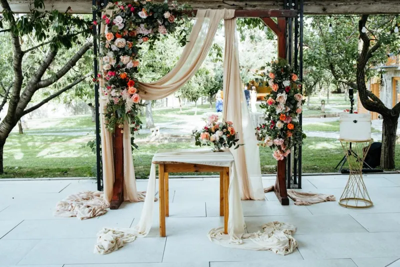
Ceremonija na terasi
Natkriveni ambijent koji spaja otvoren prostor sa većom sigurnošću kada vremenski uslovi nisu potpuno predvidivi.
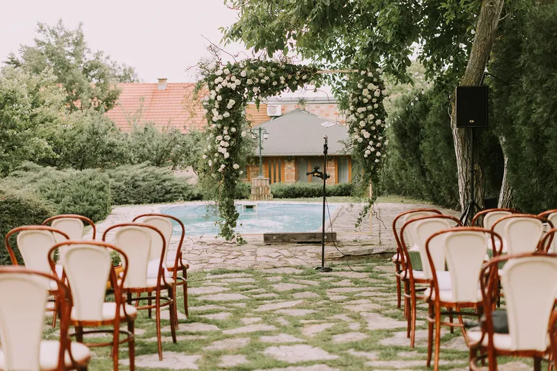
Ceremonija pored bazena
Za moderniji koncept venčanja i atmosferu koja se potpuno razlikuje od klasične sale.
Izbor zavisi od vašeg koncepta, broja gostiju i perioda godine.
Rođendani i punoletstva
Od ručka sa najbližima do velike večernje proslave.
Happy Hill prima do 200 gostiju i pruža dovoljno prostora za večeru, muziku, ples, fotografisanje i boravak na otvorenom.
Možete izabrati jedan od naših menija, a ponuda hrane i pića definiše se prema dogovoru.
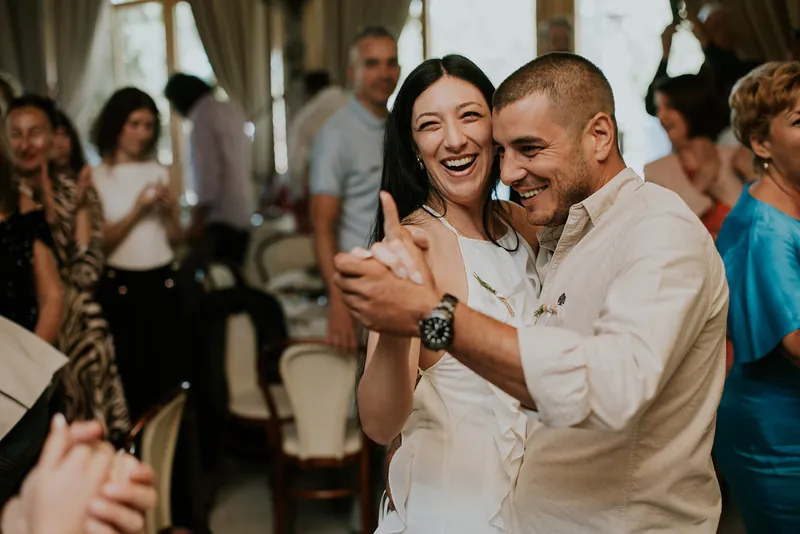
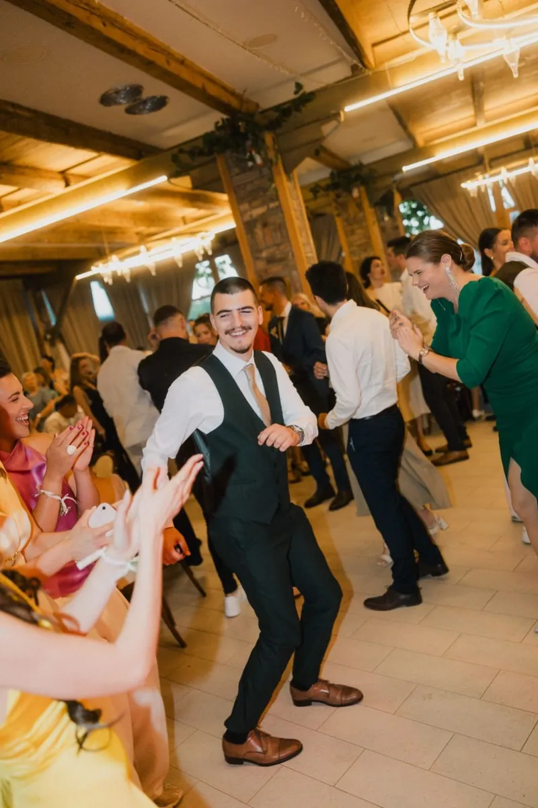
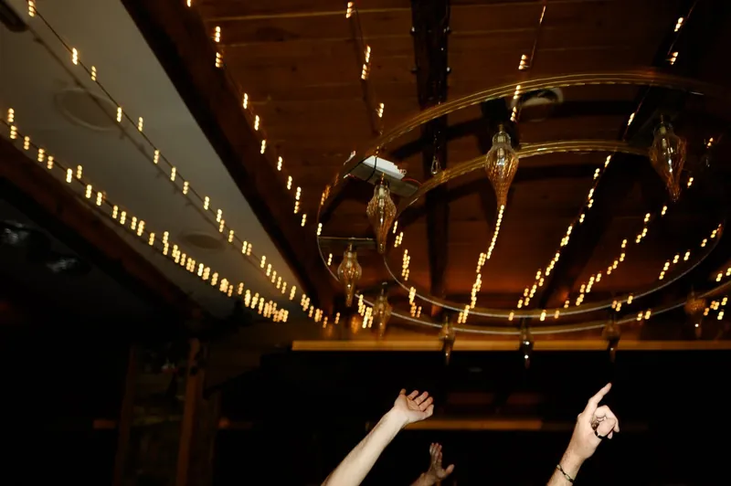
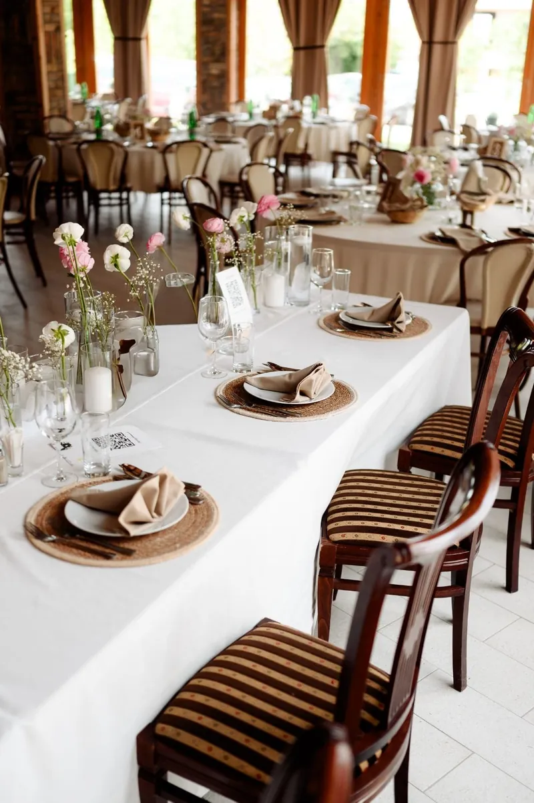
Krštenja i jubileji
Za porodične trenutke koji traže lep ambijent, dobru hranu i dovoljno prostora da se svi osećaju opušteno.
U zavisnosti od vremena i koncepta, okupljanje i ručak mogu da povežu salu, natkrivenu terasu i otvorene delove imanja.
Uz veliki parking, gosti dolaze bez komplikacija, a vi možete da se bavite onim zbog čega ste se okupili.
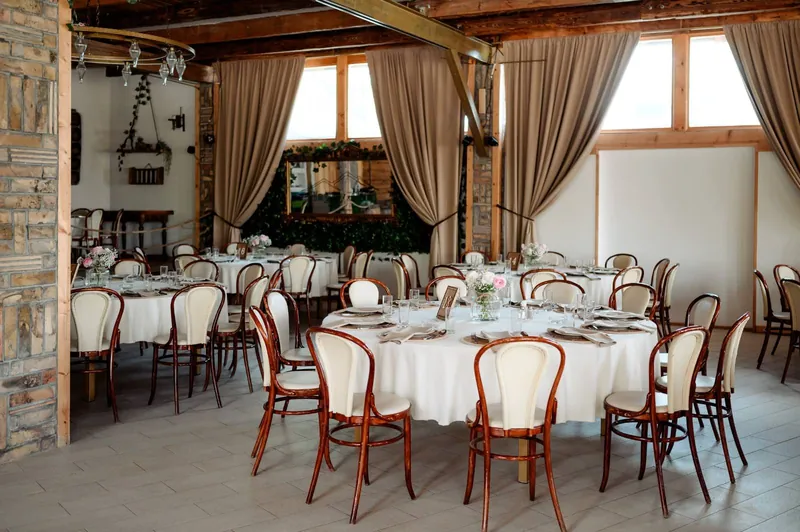
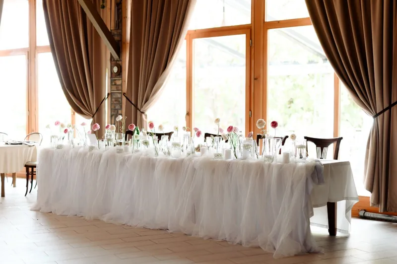
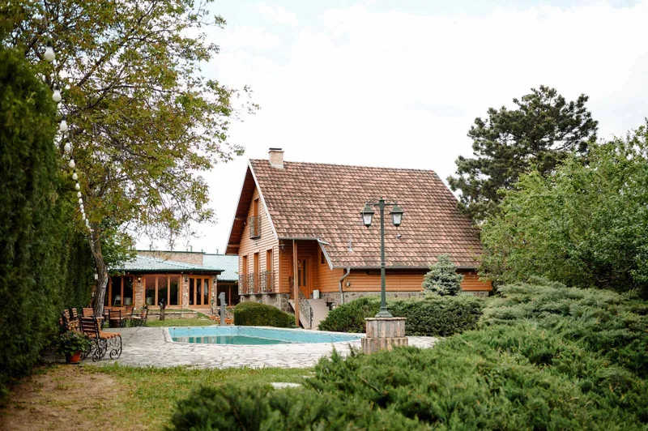
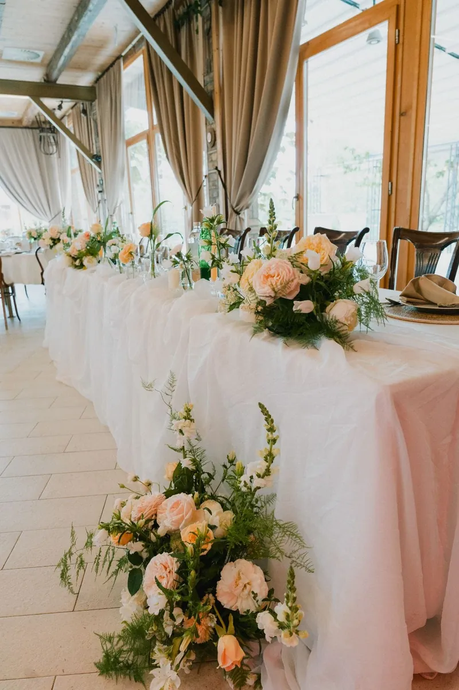
Team building i korporativni događaji
Izvedite tim iz kancelarije
Happy Hill je dostupan i za team building, poslovna okupljanja, prezentacije i korporativne događaje.
Bašta, voćnjak, terasa i zatvoreni prostor omogućavaju organizaciju različitih aktivnosti tokom jednog dana, za grupe do 200 ljudi.
Uz veliki parking i mogućnost organizacije hrane i pića, sve što vam je potrebno nalazi se na jednom mestu.
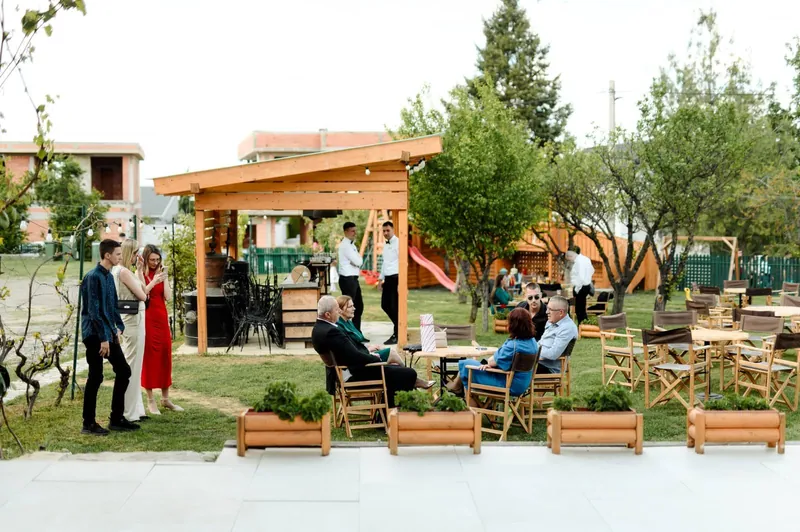
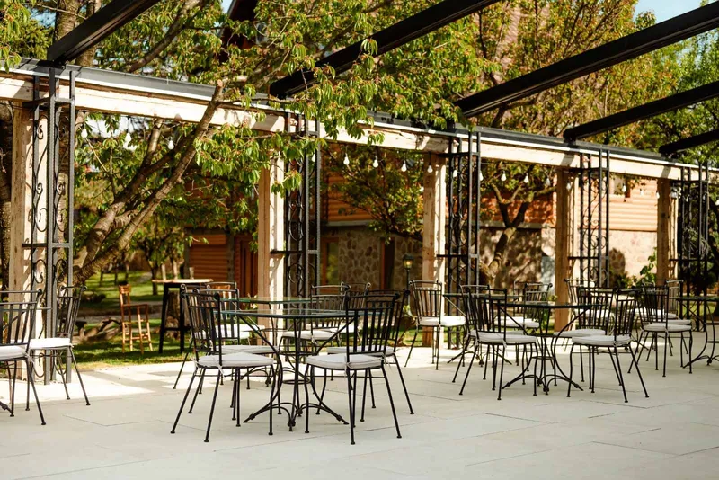
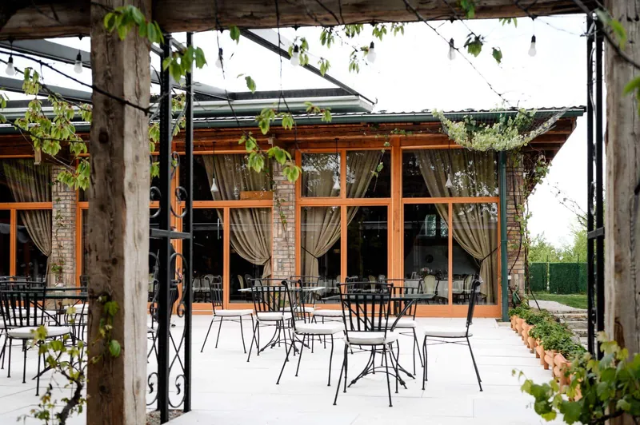
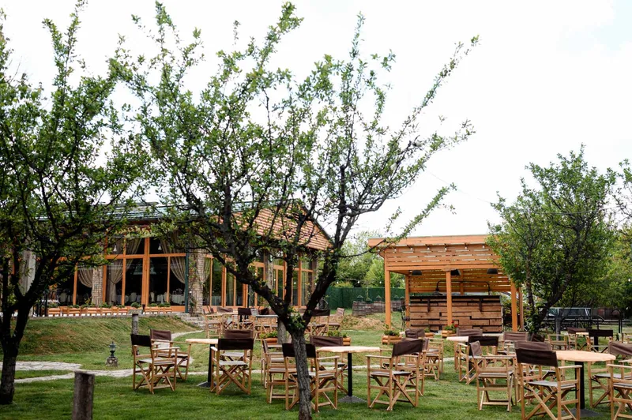
Vaš datum počinje jednim obilaskom
Ako razmišljate o venčanju ili proslavi u Happy Hillu, najbolje je da prostor prvo vidite uživo.
Recite nam željeni datum i okviran broj gostiju, a mi ćemo proveriti dostupnost i dogovoriti obilazak.